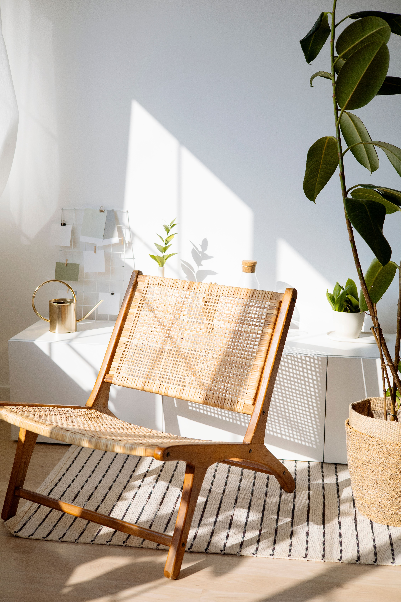

In This Article
- Look for Comfortable Natural Light
- Protect the Nook From Household Traffic
- Add Focused Task Lighting
- Choose a Supportive Seat
- Keep Books and Essentials Within Reach
- Control Noise and Distractions
- Use a Window Corner Carefully
- Create a Sense of Separation
- Plan for Different Readers
- Frequently Asked Questions
- Conclusion
Look for Comfortable Natural Light
A reading nook benefits from daylight, but direct glare on pages or screens can become tiring. Observe how sunlight moves through the room and choose a position where light is useful without overheating the seat.
For how to choose the best location for a reading nook, this part of the plan deserves attention before you buy materials or change the space. Use look for comfortable natural light as a checkpoint: look at the actual conditions, note practical limits, and decide what success should look like in daily use. Photographs, measurements, and a short written note can make the decision easier to review later. A deliberate approach also reduces the chance of solving one problem while creating another.
After the first change related to look for comfortable natural light, observe the result under normal conditions instead of judging it immediately. Check access, maintenance, comfort, moisture, light, stability, and seasonal effects where they are relevant to how to choose the best location for a reading nook. Small adjustments made from real observation are usually more useful than adding several new features at once. Keep the solution simple enough that it can still be maintained months from now.
Protect the Nook From Household Traffic
A chair beside a busy doorway may look attractive but rarely feels restful. Choose a corner outside the main route between rooms, while keeping enough clearance to enter and leave the seat comfortably.
For how to choose the best location for a reading nook, this part of the plan deserves attention before you buy materials or change the space. Use protect the nook from household traffic as a checkpoint: look at the actual conditions, note practical limits, and decide what success should look like in daily use. Photographs, measurements, and a short written note can make the decision easier to review later. A deliberate approach also reduces the chance of solving one problem while creating another.
After the first change related to protect the nook from household traffic, observe the result under normal conditions instead of judging it immediately. Check access, maintenance, comfort, moisture, light, stability, and seasonal effects where they are relevant to how to choose the best location for a reading nook. Small adjustments made from real observation are usually more useful than adding several new features at once. Keep the solution simple enough that it can still be maintained months from now.
Add Focused Task Lighting
Even a bright daytime corner needs a lamp for evenings and cloudy days. Position the light so it reaches the book without shining directly into the reader's eyes, and keep cords away from walking paths.
For how to choose the best location for a reading nook, this part of the plan deserves attention before you buy materials or change the space. Use add focused task lighting as a checkpoint: look at the actual conditions, note practical limits, and decide what success should look like in daily use. Photographs, measurements, and a short written note can make the decision easier to review later. A deliberate approach also reduces the chance of solving one problem while creating another.

After the first change related to add focused task lighting, observe the result under normal conditions instead of judging it immediately. Check access, maintenance, comfort, moisture, light, stability, and seasonal effects where they are relevant to how to choose the best location for a reading nook. Small adjustments made from real observation are usually more useful than adding several new features at once. Keep the solution simple enough that it can still be maintained months from now.
Choose a Supportive Seat
Comfort depends on seat depth, back support, height, and how long you normally read. Test the chair with the posture you actually use rather than selecting it only for appearance.
For how to choose the best location for a reading nook, this part of the plan deserves attention before you buy materials or change the space. Use choose a supportive seat as a checkpoint: look at the actual conditions, note practical limits, and decide what success should look like in daily use. Photographs, measurements, and a short written note can make the decision easier to review later. A deliberate approach also reduces the chance of solving one problem while creating another.
After the first change related to choose a supportive seat, observe the result under normal conditions instead of judging it immediately. Check access, maintenance, comfort, moisture, light, stability, and seasonal effects where they are relevant to how to choose the best location for a reading nook. Small adjustments made from real observation are usually more useful than adding several new features at once. Keep the solution simple enough that it can still be maintained months from now.
Keep Books and Essentials Within Reach
A narrow shelf, side table, basket, or wall ledge can hold current books, glasses, and a drink. Avoid surrounding the chair with so much storage that the nook becomes visually crowded.
For how to choose the best location for a reading nook, this part of the plan deserves attention before you buy materials or change the space. Use keep books and essentials within reach as a checkpoint: look at the actual conditions, note practical limits, and decide what success should look like in daily use. Photographs, measurements, and a short written note can make the decision easier to review later. A deliberate approach also reduces the chance of solving one problem while creating another.

After the first change related to keep books and essentials within reach, observe the result under normal conditions instead of judging it immediately. Check access, maintenance, comfort, moisture, light, stability, and seasonal effects where they are relevant to how to choose the best location for a reading nook. Small adjustments made from real observation are usually more useful than adding several new features at once. Keep the solution simple enough that it can still be maintained months from now.
Control Noise and Distractions
Distance from televisions, kitchen activity, and frequently used doors can improve concentration. Curtains, rugs, upholstered furniture, and bookshelves may also soften sound in hard-surfaced rooms.
For how to choose the best location for a reading nook, this part of the plan deserves attention before you buy materials or change the space. Use control noise and distractions as a checkpoint: look at the actual conditions, note practical limits, and decide what success should look like in daily use. Photographs, measurements, and a short written note can make the decision easier to review later. A deliberate approach also reduces the chance of solving one problem while creating another.
After the first change related to control noise and distractions, observe the result under normal conditions instead of judging it immediately. Check access, maintenance, comfort, moisture, light, stability, and seasonal effects where they are relevant to how to choose the best location for a reading nook. Small adjustments made from real observation are usually more useful than adding several new features at once. Keep the solution simple enough that it can still be maintained months from now.
Use a Window Corner Carefully
Windows provide pleasant light and views, but consider drafts, strong afternoon sun, condensation, and access to curtains or blinds. Do not block heaters, vents, or emergency access.
For how to choose the best location for a reading nook, this part of the plan deserves attention before you buy materials or change the space. Use use a window corner carefully as a checkpoint: look at the actual conditions, note practical limits, and decide what success should look like in daily use. Photographs, measurements, and a short written note can make the decision easier to review later. A deliberate approach also reduces the chance of solving one problem while creating another.

After the first change related to use a window corner carefully, observe the result under normal conditions instead of judging it immediately. Check access, maintenance, comfort, moisture, light, stability, and seasonal effects where they are relevant to how to choose the best location for a reading nook. Small adjustments made from real observation are usually more useful than adding several new features at once. Keep the solution simple enough that it can still be maintained months from now.
Create a Sense of Separation
A small rug, floor lamp, wall color, or nearby shelf can visually define the reading area without constructing a wall. The goal is to signal a different activity while keeping the room open.
For how to choose the best location for a reading nook, this part of the plan deserves attention before you buy materials or change the space. Use create a sense of separation as a checkpoint: look at the actual conditions, note practical limits, and decide what success should look like in daily use. Photographs, measurements, and a short written note can make the decision easier to review later. A deliberate approach also reduces the chance of solving one problem while creating another.
After the first change related to create a sense of separation, observe the result under normal conditions instead of judging it immediately. Check access, maintenance, comfort, moisture, light, stability, and seasonal effects where they are relevant to how to choose the best location for a reading nook. Small adjustments made from real observation are usually more useful than adding several new features at once. Keep the solution simple enough that it can still be maintained months from now.
Plan for Different Readers
If several people use the nook, choose adjustable lighting and a seat that accommodates different postures. A footstool or movable side table can add flexibility.
For how to choose the best location for a reading nook, this part of the plan deserves attention before you buy materials or change the space. Use plan for different readers as a checkpoint: look at the actual conditions, note practical limits, and decide what success should look like in daily use. Photographs, measurements, and a short written note can make the decision easier to review later. A deliberate approach also reduces the chance of solving one problem while creating another.
After the first change related to plan for different readers, observe the result under normal conditions instead of judging it immediately. Check access, maintenance, comfort, moisture, light, stability, and seasonal effects where they are relevant to how to choose the best location for a reading nook. Small adjustments made from real observation are usually more useful than adding several new features at once. Keep the solution simple enough that it can still be maintained months from now.
Frequently Asked Questions
The best reading nook is usually a quiet, comfortable location with controllable light and minimal interruption. A large room is not necessary; a carefully chosen corner can work very well.
For how to choose the best location for a reading nook, this part of the plan deserves attention before you buy materials or change the space. Use frequently asked questions as a checkpoint: look at the actual conditions, note practical limits, and decide what success should look like in daily use. Photographs, measurements, and a short written note can make the decision easier to review later. A deliberate approach also reduces the chance of solving one problem while creating another.
After the first change related to frequently asked questions, observe the result under normal conditions instead of judging it immediately. Check access, maintenance, comfort, moisture, light, stability, and seasonal effects where they are relevant to how to choose the best location for a reading nook. Small adjustments made from real observation are usually more useful than adding several new features at once. Keep the solution simple enough that it can still be maintained months from now.
Conclusion
Choose the location before buying decorative accessories. Good light, comfortable seating, easy access, and distance from traffic will influence how often the reading nook is actually used.
For how to choose the best location for a reading nook, this part of the plan deserves attention before you buy materials or change the space. Use conclusion as a checkpoint: look at the actual conditions, note practical limits, and decide what success should look like in daily use. Photographs, measurements, and a short written note can make the decision easier to review later. A deliberate approach also reduces the chance of solving one problem while creating another.
After the first change related to conclusion, observe the result under normal conditions instead of judging it immediately. Check access, maintenance, comfort, moisture, light, stability, and seasonal effects where they are relevant to how to choose the best location for a reading nook. Small adjustments made from real observation are usually more useful than adding several new features at once. Keep the solution simple enough that it can still be maintained months from now.